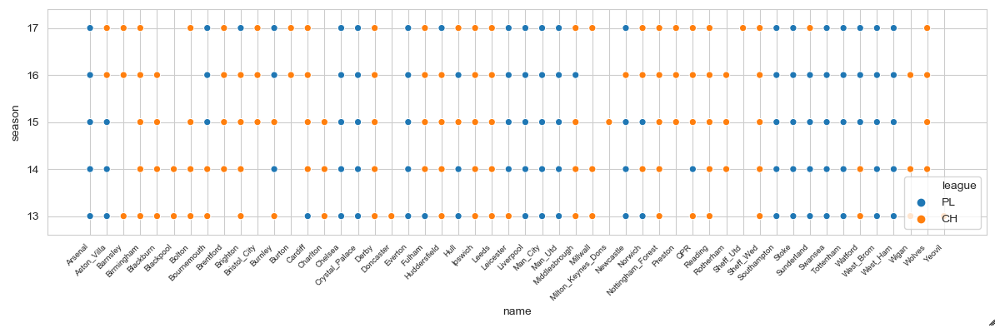
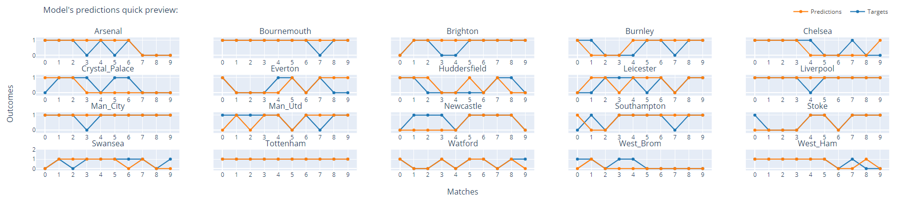
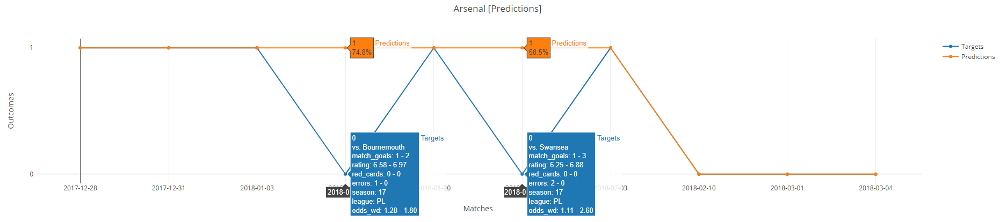

Predicting soccer matches outcomes with machine learning as time series
Table of contents
-
2.1 Dataset
2.2 Features
2.3 Architecture
2.4 Training
2.5 Picking a team
-
3.1 Test case #1 - no odds restrictions
-
4.1 Some questions you might ask
4.2 Final note
1. Introduction
Predicting sport events has always been a popular domain. Not only because of the degree of uncertainty and excitement but also due to possibility of winning money by betting. Soccer, the most popular sport in the world, remains an especially attractive topic for predicting matches outcomes.
There are many works focusing on using classical approaches when predicting outcomes of the matches—using SVMs, trees, logistic regressions, NNs, etc. However, they usually do not respect the natural time ordering of the matches, since it might be actually quite problematic to properly grasp this concept.
In this post, I will be modeling the predictions as time series classification with use of neural networks in an unconventional way (to my best knowledge).
1.2 Framing the problem
Predicting (forecasting) a value in the future is connected with many problems. The accuracy of prediction is influenced by several key factors—quality of historical data available, amount of historical data available, forecasted target horizon, available features, and of course the nature of problem itself.
Time series forecasting differs from other ML approaches as there are often not enough data points. For example, when forecasting in a day’s timeframe, even if we have several years of historical data available, it is still mere hundreds or thousands of data points, a very small dataset, prompting many to dismiss it as NNs would not work on such small amount of data points. Further, if we increase the forecasting interval to weeks or months, then the number of data points decreases even more drastically.
Generally speaking, time series also have another unique property; they are often non stationary. This means that their mean changes over time—they can be composed of seasonality, trends or cycles, etc. A once trained model probably will not work for a long period of time and will require to be retrained frequently.
This suggests that forecasting can be quite tricky and difficult.
1.3 What we are dealing with
In summary, the key factors we need to deal with:
- Time series – matches are naturally time ordered data points which sequence should be respected
- Imbalanced classes – some teams are obviously more successful than others and win more frequently
- Small amount of data points – we have only a hundred of data points for each team
- Highly aggregated data – data we have does not capture detailed information about players, instead they capture aggregated information on team level basis
- Handful of features – there are only several features available which may (not) be good predictors
- Irreducible errors – there will always be an error which cannot be predicted, such as luck, coincidence, players’ health and mental condition or other factors
In order to frame the problem as time series we have to respect ordering of matches, which brings the question of how to make the model since we have many teams. I did not have much success with a single model trying to predict outcomes of matches for all teams. Instead, we will create a model for every single team separately which will be then trained simultaneously. This might sound crazy. However, it helps us to solve the problem of small amount of data points. If each model sees consecutive matches of its own team, then the need for large dataset is not that pressing. We would need a substantially more data points when using a single model (due to mixing all teams together) to be able to capture patterns between previous teams’ plays.
To fight imbalanced classes, we will compute class weights for each team, which will be used to penalize loss for more occurring target classes during training. This is probably everything we can do here. We cannot use oversampling techniques if we want to keep the ordering of matches the same.
To enhance model performance on available data, we would need to do more feature engineering. Otherwise, the only option is to get better data.
Overcoming irreducible errors is quite problematic. To do so, we will make our task a bit easier by focusing on predicting only two outcomes—either win-or-draw or loss. This corresponds to betting on double chance (while omitting outcome of home or away team’s win).
2. Technical walkthrough
2.1 Dataset
Dataset used for training consists of Premier League and Championship matches between seasons 13-14 and 17-18. We will focus on predicting Premier League matches from the last season only. Having data from lower league is extremely helpful in order to properly track performance of teams because some teams might get promoted or demoted each season. Still, there are only about ~200 data points for each team playing in the last season. Also, some teams from Championship have only tens of data points but we cannot do anything about that.
The dataset is split into three parts:
- Prediction dataset - contains a single data point for each team which will be predicted
- Test dataset - contains 10 data points for each team. Although it might seem as a low number compared to standard approaches, it should be enough to capture current patterns in teams’ performance (it equals to a time span of about 2-3 months)
-
Train dataset - uses all remaining data points
Summary of leagues where each team played in:

{kind=link}
Full list of number of samples for each team in our dataset:
Counter of dataset samples for each team:
train test predict
Arsenal 179 10 1
Aston_Villa 160 - -
Barnsley 92 - -
Birmingham 184 - -
Blackburn 184 - -
Blackpool 92 - -
Bolton 138 - -
Bournemouth 195 10 1
Brentford 140 - -
Brighton 215 10 1
Bristol_City 92 - -
Burnley 195 10 1
Burton 46 - -
Cardiff 176 - -
Charlton 138 - -
Chelsea 179 10 1
Crystal_Palace 179 10 1
Derby 189 - -
Doncaster 46 - -
Everton 179 10 1
Fulham 178 - -
Huddersfield 214 10 1
Hull 163 - -
Ipswich 186 - -
Leeds 184 - -
Leicester 187 10 1
Liverpool 179 10 1
Man_City 179 10 1
Man_Utd 179 10 1
Middlesbrough 179 - -
Millwall 92 - -
Milton_Keynes_Dons 46 - -
Newcastle 187 10 1
Norwich 171 - -
Nottingham_Forest 184 - -
Preston 92 - -
QPR 179 - -
Reading 187 - -
Rotherham 138 - -
Sheff_Wed 189 - -
Southampton 179 10 1
Stoke 179 10 1
Sunderland 152 - -
Swansea 179 10 1
Tottenham 179 10 1
Watford 195 10 1
West_Brom 179 10 1
West_Ham 179 10 1
Wigan 140 - -
Wolves 138 - -
Yeovil 46 - -
2.2 Features
In the current state, mostly simple features are used as inputs. Some more advanced features, e.g. obtained by advanced feature engineering, would definitely be useful to incorporate.
Following features are used:
-
Encoded features (as binary vectors):
- Team – name of current team
- Opponent – name of current team’s opponent
-
Categorical features:
- League – Premier League (1) or Championship (0)
- As home – whether current team plays as home (1) or not (0)
- WD - match outcome as win-or-draw (1) or loss (0)
-
Numerical features (scaled into (0,1) range):
- Season – current season number
- Rating – team’s performance rating
- Goals - number of goals team shot
- Shots – total number of shots
- Errors – number of errors team made leading to a goal
- Red cards - number of red cards team received
- Odds WD – odds for win-or-draw (equal to odds 1X and X2 for double chance)
Also, future values of some features are used as input. We can use them as input since they are known in advance to the target match:
- Future as home
- Future opponent
- Future odds WD
The target variable is then a value of Future WD feature, i.e. outcome of target match.
2.3 Architecture
Each model consists of two heads – main head, and head2.
Architecture of both heads is basically mirrored (except for final layer which belongs to the main head). Inputs are concatenated and fed into LSTM layer with 35 neurons. Output of LSTM is then fed into Dense layer with 15 neurons. Then, outputs from both Dense layers are concatenated and fed into final output Dense layer. The LSTMs are in stateful mode and use batch size of 1, i.e. we are using online learning. The intermediate Dense layers use ELU activation function, while the output Dense layer uses Softmax activation function with two output classes. The inputs are formed as fixed sliding windows of 40 timesteps (which equals to about a year of previous matches for given team). In theory, stateful LSTMs should be (ideally) able to capture some patterns between batches. Cross entropy is used as a loss function along with Adam optimizer with learning rate set to 3e-4.
{kind=link}
Main head layers "belong" to team the model is created for. Head2 layers’ weights are dynamically set according to opponent of the current team. They are held fixed and only weights of the main head are updated. The weights used for head2 layers are copied from main head of the opponent’s model.
The network is relatively simple, yet seems effective. It might not be powerful enough to capture all possible relationships in the data but it will do okay for our case now. We cannot get too fancy here due to relatively small dataset. Making large network with many parameters would be counterproductive for us. The network has already about 9000 trainable parameters which can be quite a lot compared to the number of data points, but with usage of L2 regularization it still seems feasible. Also, we have to keep in mind that we are training many models at once and the total number of parameters will be multiplied by the number of models which will have impact on computational time and resources required.
In simple terms, you can think of the core idea as sticking two different networks together for every match, each network representing past performance of particular team, and deciding the outcome based on learned weights so far.
2.4 Training
During training, the program loops over consecutive matches and trains models for both teams for each particular match. First, model of home team is trained, then model of away team is trained. This ensures that all models are trained simultaneously on matches exactly as they were historically played.
Simplified schema of training:
{kind=link}
This is the basic procedure. But some more tweaks are used during training:
- Both models’ weights must be set before training any of the models in order to avoid using already updated weights when training a second model (the second model could capture some information about the match result).
- Head2 layers are held fixed. However, the states of LSTM will be updated anyway and must be stored (and loaded when the team plays next match).
- Models are not trained on current weights of other models. Instead, models are always operating with best weights of other models. This ensures that current model’s weights will not be impaired if some other model starts overfitting. Thus, each model keeps a snapshot of every other model’s best weights.
- Performance of models is evaluated on test set after each epoch. If model’s performance improves then its weights are updated in every other model’s snapshot.
- All models use the same initial weights, copied from the first model created. This keeps starting point of networks the same making learning of models more stable.
Each network is encapsulated within its own session and graph to avoid making one enormous graph. Keras has problems with creating and maintaining lots of models inside one graph. The training (at least first batches) and saving/loading takes extremely long which makes debugging and testing absolutely impractical. We create some overhead due to constantly switching between sessions, graphs, setting and getting weights, but it is still faster.
Basically, everything important is done manually, i.e. getting and setting weights via Keras get_weights, set_weights methods, saving weights as numpy files, training by using train_on_batch, etc. Further, every interaction with the network itself must be done within its session and graph, e.g. by: with session.as_default(), graph.as_default():.
Example of training progress:

Due to dependency on other models’ weights, online learning and the nature of problem, the loss and accuracy curves might be a lot jumpier than you would usually see. Also, it should not be expected to see loss going near zero.
There are two sets of metrics, one corresponds to the actual metrics logged and the other to the best metrics logged so far. For example, Arsenal’s model stops improving at epoch ~40. From that point on the model starts overfitting (test loss increases and test accuracy decreases). Thus, in order to prevent using a degraded performance of the model, only best weights recorded are used for prediction and when interacting with other models. The training of the model itself is not stopped because it is dependent on other models and its performance might still change.
A condition used to assess whether the model improved:
if (accuracy > best_accuracy) or (accuracy == best_accuracy and loss < best_loss)
Which means that either loss must decrease while accuracy remains same, or accuracy must increase regardless of whether the loss decreases or not.
Example of models’ performance on a test dataset:

As you can see, model was able to capture performance of some teams decently, but not for every team. Part of wrong predictions does not directly result into a loss of bet—when a draw occurs. Draws are fairly common in soccer and thanks to betting on win-or-draw outcome then regardless of chosen team, we would still win the bet. This property along with the decision mechanism described in the next part helps us greatly mitigate risk when betting.
{kind=link}
Reason of some predictions failing:

In the first case, Arsenal made one error and lost by one goal. In the second case, Arsenal made two errors and lost by two goals. Such events are very hard to predict and are almost inevitable.
{kind=link}
On a side note. It becomes hard to ensure reproducibility when training multiple models at once since every small variation in computation adds up during training and results might look very different. Although the full deterministic behavior is not usually expected from neural networks, it would be quite handy for this particular task, especially when testing different settings. Even when seeding every graph and operation the reproducibility is still not ensured. It might not even be possible due to constantly changing weights, using online training, managing multiple sessions and graph and/or other imprecisions during training. Hence, the models should be ideally retrained multiple times to get a more representative sample of performance, otherwise they may seem unstable. This is the biggest disadvantage encountered so far.
2.5 Picking a team
When training of models is finished, we need to pick a team to bet on. Since we are using a separate model for each team, we have two predictions for a single match. How to make decision then? We will select only those matches where both models agree on the result, i.e. model1 predicts 1 (win-or-draw) and model2 predicts 0 (loss), and vice versa. Other predictions (1-1, 0-0) are ignored.
However, we want to be as “sure” as possible of the outcome because we will be betting on relatively low odds. There will be many cases where the predictions are just slightly above the decision threshold (0.5) and it would be still too risky to bet on them.
So, to further ensure confidence in predictions, we will compute lowest prediction threshold which gives highest accuracy over the test set. For example, if we achieve 100% accuracy on the test set with threshold above 90 %, then the same threshold will be used during forecasting for selecting matches to bet on.
Also, some odds might be extremely low. In that case we may wish to ignore matches under a certain value of odds. Betting on them might not be worth the risk.
3. Testing and results
Last 15 rounds of season 17-18 were selected as testing period (slightly less than half of season). Here “round” refers to number of matches for each team, i.e. 15 rounds mean that prediction was done on last 15 matches each team has played.
Backtesting was done in a walk-forward manner. Meaning that 15 different iterations of training and testing were run, each time predicting only the next round.
Due to non-determinism, the whole testing was repeated three times while selecting model with the best performance on the test dataset for each round. First criterion was to achieve highest accuracy, the second was to achieve highest positive net gain.
In order to compare models’ performance, the bookmaker predictions were chosen as a form of baseline. Thus, betting according to model, and betting according to the lowest odds given by the bookmaker (as they should represent the highest probability of the outcome) is compared. For simplicity, the bookmaker predictions were calculated as 1 / odds.
There were two test cases with four scenarios being tested in each of them:
-
No restriction of odds – all odds values (except for 1.00) will be taken into account when selecting matches to bet on
- Bookmaker predictions without threshold selection – no selection of matches based on probability threshold level for bookmaker predictions
- Bookmaker predictions with threshold selection – matches to bet on are narrowed down according to the best probability threshold on test set for bookmaker predictions
- Model predictions without threshold selection – no selection of matches based on probability threshold level for model predictions
- Model predictions with threshold selection – matches to bet on are narrowed down according to the best probability threshold on test set for model predictions
-
Restricting odds – odds under 1.10 will be omitted when selecting matches to bet on because the potential gain is negligible and not worth the risk
- The same four scenarios as above
It is useful to compare model predictions with bookmaker predictions in order to check whether the model has not learned just to copy the predictions according to the odds.
In total there were 150 matches played across time span of 113 days.
3.1 Test case #1 - no odds restrictions
No odds restrictions are applied for the first test case. All four scenarios are tested.
3.1.1 Bookmaker predictions without threshold selection
{kind=link}
Total number of matches to bet on: 149 Total accuracy: 79.9% Average odds: 1.21 Total net gain: -616.0% Total ROI: -4.1%
3.1.2 Bookmaker predictions with threshold selection
{kind=link}
Total number of matches to bet on: 14 Total accuracy: 85.7% Average odds: 1.03 Total net gain: -163.0% Total ROI: -11.6%
3.1.3 Model predictions without threshold selection
{kind=link}
Total number of matches to bet on: 65 Total accuracy: 75.4% Average odds: 1.44 Total net gain: 316.0% Total ROI: 4.9%
3.1.4 Model predictions with threshold selection
{kind=link}
Total number of matches to bet on: 41 Total accuracy: 87.8% Average odds: 1.39 Total net gain: 900.0% Total ROI: 22.0%
3.2 Test case #2 - ignoring odds below 1.10
All odds below 1.10 are omitted for the second test case. Again, all four scenarios are tested.
3.2.1 Bookmaker predictions without threshold selection
{kind=link}
Total number of matches to bet on: 111 Total accuracy: 76.6% Average odds: 1.27 Total net gain: -386.0% Total ROI: -3.5%
3.2.2 Bookmaker predictions with threshold selection
{kind=link}
Total number of matches to bet on: 28 Total accuracy: 75.0% Average odds: 1.19 Total net gain: -324.0% Total ROI: -11.6%
3.2.3 Model predictions without threshold selection
{kind=link}
Total number of matches to bet on: 51 Total accuracy: 72.5% Average odds: 1.55 Total net gain: 463.0% Total ROI: 9.1%
3.2.4 Model predictions with threshold selection
{kind=link}
Total number of matches to bet on: 32 Total accuracy: 90.6% Average odds: 1.49 Total net gain: 1069.0% Total ROI: 33.4%
4. Conclusion
As you can see, sticking to the lowest odds given by bookmaker leads eventually to a loss of money regardless of chosen betting strategy.
Contrarily, betting according to the model predictions leads to a profitable strategy. All tested scenarios resulted into a positive net gain and ROI regardless of chosen strategy. The highest profit achieved was 1069 % with prediction accuracy around 90 % and ROI 33.4 % over the tested period.
From the total number of 150 matches, only 32 of them were selected to bet on (about every fifth match). This might seem like a low number, but our goal is to minimize risk and maximize profit, so a more conservative betting strategy yielding a steady profit is actually preferable.
4.1 Some questions you might ask
Can it be profitable when run live?
In current state? I highly doubt it. Backtesting always looks better than live systems and I would not expect to see similar performance when live. However, the core idea might be promising and it is just a baseline of what could be done—some things are still heavily simplified. I am working on a much larger scale version with many improvements, will report later when finished on how it works/does not work.
Are the predictions just lucky?
Well, it is actually possible to a certain extent since the testing period is not that large. A much larger testing period would have to be used to find out. Even if the predictions were not obtained just by coincidence, some errors in predictions are inevitable, even when taking extra steps as precautions. The recovery from potential series of bet losses might be problematic due to betting on low odds stakes.
Further, there is no guarantee that the program would keep the same performance quality in other seasons. Also, due to (not only) aforementioned instability there might not be any recognizable patterns, start of season might be difficult to predict, the program may not give any predictions that would meet the prespecified conditions, etc.
Can you share the dataset?
Unfortunately, no. Model relies on some proprietary features (namely rating and errors which turned out to be good predictors) which I will not share for obvious reasons. Also, it took a relatively lot of work to form and preprocess the dataset, so I would prefer not to share it for now. If you would like to test it out, you would have to put together your own. Some basic features can be scraped from many sites. Those sites offering juicier features are trickier to scrape, but it is definitely possible to scrape everything if you are dedicated.
Can you share the code?
Since I am not sharing the dataset, I decided to share the code instead. You may object that it is useless without the dataset but I wanted to share at least something.
The full source code is available on my github. If you are interested, please check the repository. However, keep in mind that you will not be able to run the actual training without the dataset. So, please, take it mostly as an inspiration if you would like to build something similar or just to take a look how I implemented various things.
4.2 Final note
Now, I am not saying that there are absolutely no errors in the code/concept which would make results look better than they should be. But I tried to make it as correctly as possible focusing on not introducing data leakage/lookahead bias with currently available data.
However, one thing that I am aware of, which could have impact on the predictions, is that the models use closing odds. Here it becomes much more complicated. Although, closing and opening odds usually differ, odds a day before the match (for example) might not differ that much, especially for double chance. Also, they vary even between bookmakers.
But the later odds might represent better information than opening odds. Which odds to use then? This would depend on how far ahead we would want to train models before the actual match. Another complication arises—the matches for single round are not played in one day, they are played even with several days apart from each other. This would require to train models several times in order to make things absolutely correctly.
As I said, it quickly becomes a lot more complicated. So, for simplicity, the models currently use closing odds. Thus, the effect on predictions using closing odds is unknown so far and would have to be subject for substantially more testing.
Comments
Comments powered by Disqus